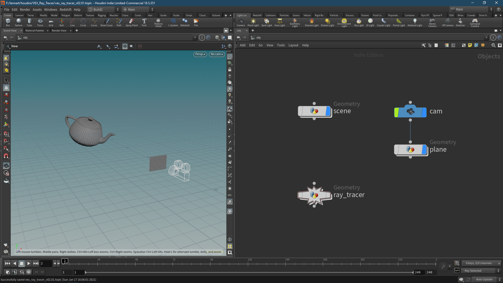

VEX Ray Tracer #1: Initial Setup
No more procrastinating. After thinking about all the different ways to put this on the internet, I decided to start a blog, and this is my first blog post.
In August 2019, I uploaded a video on my Vimeo channel, showcasing a ray tracer written in VEX inside SideFX’s Houdini.
I’ve been meaning to put up some explanation, video tutorial, class, whatever you want to call it on how to write this thing. Both to teach and to learn how to present ideas and improve on them upon reader interaction.
So here it is, part one of my VEX ray tracer.
We start with the initial setup and have to decide how to present the calculated image. I decided to use a projection plane.

I’m using a projection plane instead of working straight off the geometry because of the ease of scaling up and down resolution, and therefore performance, by dialling in the grid resolution to your desired size. It also means, that I can stay resolution independent for the objects in my scene.
In this particular example, I have a camera set to a 4:3 aspect ratio looking straight onto a grid with the same aspect ratio (not necessarily the same resolution). I parented the plane to the camera in case we wanted to do some crazy camera movements down the line.
Furthermore, I got a scene geometry where we can throw in whatever we want to see on the final image. A Utah teapot just seems right.
And lastly, an empty geometry container in which the magic happens. Later on, we will go back to the scene to create some custom materials and maybe play with the Normals but for now this is how we are gonna start.
| [[VEX Ray Tracer 02 - Plane Projection|Plane Projection]] >